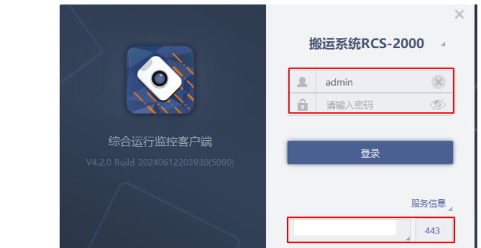
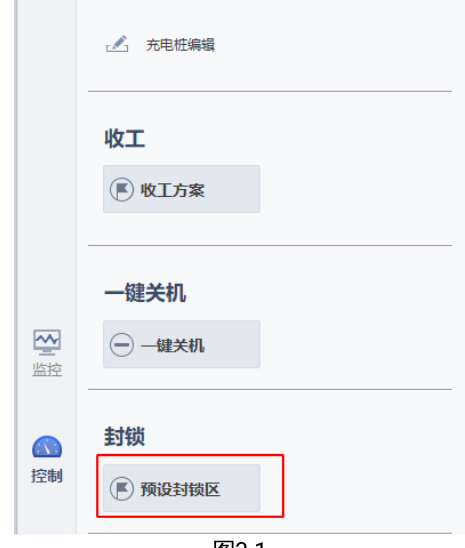
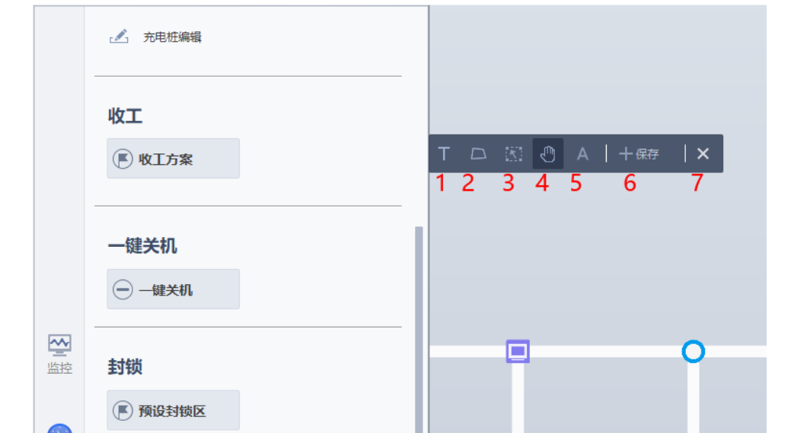
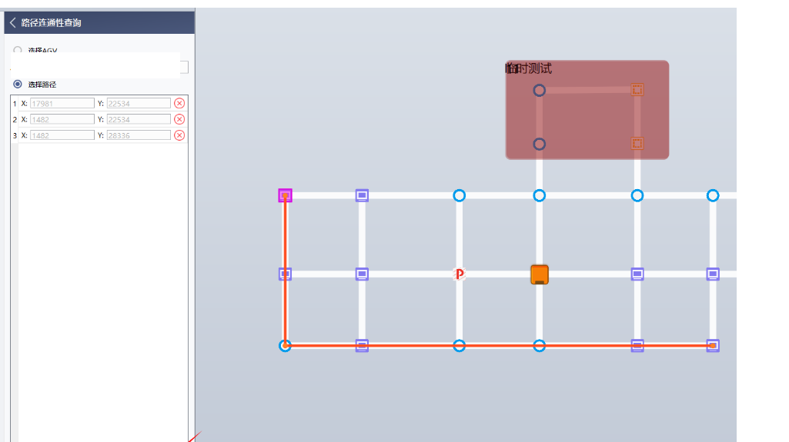

监控客户端登录与现场管控操作要点
监控客户端是现场值班与运维最常用的图形化工具：看地图、看车、录屏、封锁区、批量收工与关机、路径排查都在这里完成。本篇按工具的操作顺序整理：先解决登录与端口对应关系，再逐项说明每个管控功能的入口、参数和判断依据。
配置与工具目录
本篇为基于厂商操作手册的原创整理，只提炼流程与判断方法，不复制原文；不同版本与控制器存在差异，结论请结合现场验证使用。
工具定位与适用版本
监控客户端面向技术支持、现场实施、项目经理与客户，提供仓库地图实时监控、机器人控制、平台任务显示与调度等基础功能。适用版本：RCS-2000 全版本、RCS-Lite 全版本、监控客户端全版本。
典型使用场景：
- 值班看板：地图上实时查看车的位置、状态、任务；
- 异常处置：临时封锁区域、批量收工、批量关机；
- 排障：路径连通性查询，定位「无有效路径」告警原因；
- 交接与汇报：录制运行视频、给地图加文字与图形注释。
下载与登录（含端口对应表）
监控客户端与 RCS-2000 版本存在兼容性差异，推荐直接到 RCS 首页下载，不要用别的现场拷来的安装包。
- 在 RCS 首页下载并安装监控客户端。
- 输入 RCS 平台的账号与密码（与登录 web 相同）。
- 点击「服务信息」，IP 填 RCS 平台地址，端口按 RCS 版本选择：
| RCS 版本 | 端口 | RCS 版本 | 端口 |
|---|---|---|---|
| V2.X | 80 | V3.0–V3.1.3 | 8182 |
| V3.1.4–V3.3 | 443 | V4.0 | 38182 |
| V4.1 及之后 | 443 | RCS-Lite | 6543 |

最常见的登录失败原因不是密码错，而是端口与 RCS 版本不匹配。V4.0 用 38182，V4.1 用 443，两者填反必然连不上。
监控录制
- 进入「监控」界面，地图上会显示所有机器人与站点。
- 点击「录制」按钮，开始录制当前地图上 AMR 的运行情况；再次点击结束。
- 点击「设置」可查看「录像存储路径」，录像默认保存在客户端安装目录下，需要留存证据时及时拷出。
使用建议：现场异常、抖动、堵车等问题，先开录制再复现，便于事后与日志对齐时间点。
预设封锁区
场景：地面施工、漏水、临时堆放物料时，让人可以进入该区域而 AMR 不会驶入。
- 在控制界面点「预设封锁区」进入封锁区界面。
- 点「添加预设封锁区」，再点「框选」图标，在地图上框出需要封锁的范围。
- 框选完成后点「封锁」，填写封锁原因（建议写清原因与责任人），该区域即生效，AMR 规划路径会绕开。
- 现场恢复后点「解封」取消封锁。

封锁区只改路径规划，不等于物理隔离；人进入封锁区作业时仍需遵守现场安全规定。忘记解封会造成大面积绕行甚至无路可走，交接班时要核对封锁区清单。
一键收工（收工方案）
场景：下班、盘点、消防演练时，把多台 AMR 批量移动到固定区域暂驻。
- 在控制界面点「收工方案」进入方案界面。
- 点「添加方案」新建一种收工方案。
- 点「编辑」→ 选「点位选择」框选收工点；再选「AMR 选择」框选参与收工的机器人。重复框选可取消选择，点「重置」清空全部所选。
- 方案可「删除」「重命名」，改完点「保存」。
- 点「收工」，选中的 AMR 即前往收工点。
判断依据：收工点数量不得小于 AMR 数量，否则无法完成全部收工——框选点位时要一次多框几个。
一键关机（模式与参数）
场景：长假、停电检修，批量关机而不必逐台按机器人上的关机键。界面由「参数查询」「一键关机」按钮与 AMR 状态列表组成。
- 点「参数查询」查看当前 AMR 的一键关机参数。
- 点「一键关机」下发命令，再按需设置以下选项：
| 选项 | 取值 | 含义 |
|---|---|---|
| 关机模式 | 收工后关机 / 立即关机 | 收工后关机＝执行完当前任务、进入空闲再关机；立即关机＝马上关 |
| 控制范围 | 当前地图全部机器人 / 手动框选 | 全量操作风险高，建议手动框选 |
| 自动唤醒 | 开 / 关（开则设唤醒时间） | 开到指定时间自动开机；不开表示永久关机，需要人工开机 |
| 准关电量 | 百分比阈值 | 电量高于阈值才允许关机；低于阈值需先充电再关 |
| 超时时间 | 分钟 | 仅「收工后关机」有效：超时仍未满足条件的机器人不再关机 |
「立即关机 + 当前地图全部机器人」会让全场车瞬间断电停车，可能停在通道中间或举升半程。批量关机优先用「收工后关机」，并提前把车收工到指定区域；需要次日自动恢复时必须打开「自动唤醒」并设好时间。
地图背景：绘制与更新
场景：拓扑地图只有点和线，新人不易看懂。绘制背景可把货架、通道、充电桩等标注到地图上，快速理清现场布局。
- 点「绘制地图背景」，打开绘制面板。
- 用工具图标依次操作：「插入文字」输入文字后点地图落点；「编辑文字」可给选中文字设颜色与字体；「自定义图形」画几何图形；「绘制矩形」拖动绘制矩形；「保存」保存编辑；「关闭」退出编辑窗口。
- 画完点「更新地图背景」，当前地图背景即刷新。

路径连通性查询（无有效路径排障）
场景：AMR 告警「无有效路径 -1002」时，用它判断是地图缺线、封锁区挡住，还是起点终点本身不通。
- 点「路径连通性查询」进入查询界面。
- 在「选择 AGV」中选择要验证的机器人（查询按该车的可通行能力计算）。
- 在「选择路径」中依次添加途经点，每行填 X / Y 坐标，最多可加多个点。
- 点「路径连通性查询」，地图上若连出连续路径即为连通；否则说明两点之间缺少连线或被封锁。

选路径时相邻两点之间必须本身存在连线，否则查询会误报不通——这不是地图问题，而是查询方法错了。先用「漫游」在地图上确认两点有线段相连，再回来查询。
收尾与值班要点
- 临时操作（封锁区、收工、关机）做完要恢复：解封、复位收工方案、确认自动唤醒时间。
- 录制与截图按项目要求留存，涉及现场布局的图片对外发送前先核对是否含敏感信息。
- 客户端版本与 RCS 平台版本尽量同源，跨版本使用容易出现地图加载不全、按钮缺失。
- 批量操作前先在测试车或单台车上验证一次，确认行为符合预期再全量执行。
- 本篇出现的 IP、端口均为手册示例与默认值，现场以实际配置为准。
上线前核对
- 监控客户端来自当前 RCS 首页下载，版本与平台匹配
- 登录端口按 RCS 版本选择正确（V4.0=38182，V4.1=443，Lite=6543）
- 登录后地图、机器人列表与任务列表均能正常刷新
- 已确认录像存储路径，异常复现前已开启录制
- 封锁区框选范围准确、原因已填写，恢复后已解封
- 收工点数量不少于 AMR 数量，方案已保存并可执行
- 批量关机使用「收工后关机」，控制范围已核对（优先手动框选）
- 「自动唤醒」时间已按次日运行计划设置（或明确保持永久关机）
- 「准关电量」阈值符合现场电量策略，低电量车已先充电
- 地图背景绘制后已点「保存」并「更新地图背景」
- 路径查询相邻两点之间存在连线，能正确判断连通性